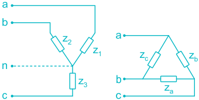
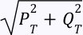
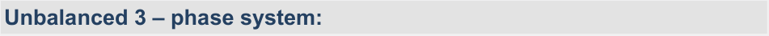

06 Three Phase Circuits
Poly phase system:
A system in which the A.C. sources operate at the same frequency but different phases is known as Poly phase system.
Why polyphase?
- 1. If we need two phase input then we take it from 3-phase system. In Aluminum industry, 48-phases are required for melting purpose. These 48-phases are formed from 3-phase systems.
- 2. Instantaneous power in 3-phases system is constant, hence uniform power transmission and less vibration of three phase machine is achieved.
- 3. It is more economic. For 3-phase system the wire requirement is less compared to single phase for the same amount of power transmission.
In 3-phase system V an, V bn, V cn are 120° apart from each other. But magnitude of all are same i.e. |V an | = |V bn | = |V cn | Phaser addition: V an + V bn + V cn = 0
Balanced load:
A balanced Load is one in which the phase impedances are equal in magnitude and in phase.

Four possible connections are
i. Y – Y (star – star connection) ii. Y - Δ (star – delta connection) iii. Δ – Δ (delta – delta connection) iv. Δ – Y (delta –star connection)
P = 3 V p I P cos θ where θ 𝑃= 3𝑉 𝐿 𝐼 𝐿 cos 𝑐𝑜𝑠 θ is phase lag of phase current from phase voltage. S = P + j Q = 3𝑉 𝐿 𝐼 𝐿 ∠θ
Three phase power measurement:
Two wattmeter method: Let P 1 and P 2 be the reading of wattmeter W 1 and W 2 respectively. Then Total real power P T = P 1 + P 2 Total reactive power 𝑄 𝑇 = 3[𝑃 2 −𝑃 1]

Total apparent power 𝑆 𝑇 = 𝑃 𝑇 𝑄 𝑇 3[𝑃 2 −𝑃 1] 𝑡𝑎𝑛θ = 𝑃 𝑇 = 𝑃 2 +𝑃 1 Where θ is the power factor angle now if i. P 2 = P 1 load is resistive ii. P 2 > P 1 load is inductive iii. P 2 < P 1 the load is capacitive
- 1. Smaller in size when compared to 3 single phase systems.
- 2. It has greater power output
- 3. Ease in parallel operation
- 4. It has more reliability
- 5. Interconnection of systems is possible.

In a 3 – phase unbalanced system V an, V bn, V cn are not 120° apart from each other. Magnitude of all are not same i.e. |V an | ≠ |V bn | ≠ |V cn |
Causes of unbalanced voltage:
- 1. Switching of three phase heavy loads results in current and voltage surges which cause unbalance in the system.
- 2. Any large single phase load, or a number of small loads connected to only one phase cause more current to flow from that particular phase causing voltage drop on line
- 3. Unbalanced incoming utility supply
For an unbalanced load if the line currents are I R, I Y, I B then, I R + I Y + I B ≠ 0 For a star connection of load I R + I Y + I B = I N Where I N is the current through neutral point
Important points:
𝑀𝑎𝑡𝑒𝑟𝑖𝑎𝑙 𝑛𝑒𝑒𝑑𝑒𝑑 𝑓𝑜𝑟 𝑠𝑖𝑛𝑔𝑙𝑒 𝑝ℎ𝑎𝑠𝑒 𝑀𝑎𝑡𝑒𝑟𝑖𝑎𝑙 𝑛𝑒𝑒𝑑𝑒𝑑 𝑓𝑜𝑟 𝑡ℎ𝑟𝑒𝑒 𝑝ℎ𝑎𝑠𝑒 = 4 1.
3
- 2. If the number of phases in a poly phase system is n, then the phase 360° difference between each phase will be 𝑛